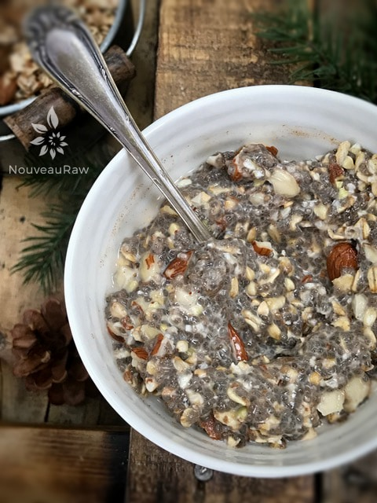

Apricot Almond Chia Muesli

~ raw, vegan, gluten-free ~
Muesli (n.) From the Old High German muos “meal, mush-like food,” That sounds somewhat disgusting, but trust me it tastes amazing The muesli recipes that I have here on my site are wonderful staples to have on hand. They require a little prep work but once made, these cereals can be stored in your fridge or freezer for up to three months.
The real prep is in the activation of the nuts, seeds, and/or grains. It’s optional, but I highly recommend that you get into the habit of soaking and then drying them. This will reduce the phytic acid and make it easier to digest. See below for activation instructions.
For this instant cereal, you just need to add your favorite milk and enjoy right away or allow it to sit anywhere from 15 minutes to overnight.
The nice thing is this muesli it is ready to eat at any time during the soaking process. The chia seeds create a little magic as soon as you add liquid to the cereal. If you are new to chia seeds, they swell up to nine times in volume. Well, they themselves, don’t get nine times larger, but they create a mucilage which adds the extra volume. This also works as a binding and thickening ingredient.
I personally love to let the cereal soak for well over thirty minutes. I have mixed up some and allowed it to sit for over six hours till I returned with a spoon in hand, and I was delighted. In one bite I experienced a creamy mouth-feel from the mix of chia gel and nut milk. Then with each chew, I still got a crunch from the buckwheat and almonds and the sweet chew from the dried apricots. Then came the aftertaste of the warming spices of cinnamon, nutmeg, and allspice. Just wonderful!
I keep mine stored in 1/2 gallon sized mason jars. A quick suggestion, if I may, is to shake or roll the jar around a few times before scooping out your daily dose. Over time the spices and chia seeds may start to settle down at the bottom. So gently mix it up to ensure that you get a nice even mix of flavors!
If you wish to make this nut-free, simply replace the almonds with your favorite seeds and instead of almond milk, make a banana milk! So many lovely options. I hope you enjoy this recipe. Blessings, amie sue
yields 4 cups
- 2 cups almonds, soaked & dehydrated
- 1 cup rolled, gluten-free oats, soaked & dehydrated
- 1/2 cup raw buckwheat, soaked & dehydrated
- 3/4 cup chia seeds
- 1/2 cup diced dried apricots
- 1 1/2 tsp ground Ceylon cinnamon
- 1/2 tsp ground nutmeg
- 1/2 tsp ground allspice
- 1/2 tsp Himalayan pink salt
Preparation:
- In a large bowl combine the; chopped almonds, oats, pecans, buckwheat, chia seeds, cinnamon, nutmeg, allspice, and salt. Mix well with your hands.
- For nut-free, replace almonds with seeds.
- Place in a large mason jar and store in refrigerator or in a cool, dry place for 1+ months.
- You can also freeze this for up to 3 months, maybe longer.
- When ready to eat; in a bowl combine 4 tablespoons of cereal and either 1/2 -1 cup of yogurt or nut milk for approximately 15+ minutes.
- Remember, the longer you let it soak, the more porridge like it will become.

© AmieSue.com